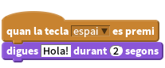
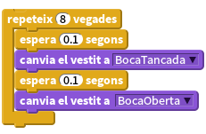
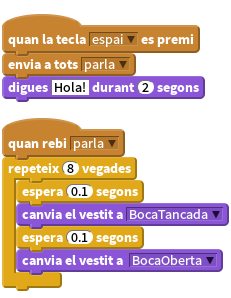
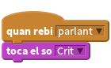

Llista de tasques
Per fer parlar al monstre utilitzarem l’objecte
digues.
Per fer-ho més impressionant, podem fer que la boca s’obri i es tenqui mentre el monstre parla. Per fer això, haurem d’editar l’objecte que conté la boca - creant un nou
vestitque tingui la boca tancada. Si anem canviant d’un vestit a l’altre animarem la boca i farem que s’obri i es tenqui.
Per connectar els dos apartats anteriors, utilitzarem el bloc
digues, enviant a tots un missatge perquè els altres blocs reaccionin.
Per fer-ho un pèl més flexible, utilitzarem una variable per controlar quan parla el monstre
tempsParla, i també controlar quantes vegades es repetirà l’animació.![quan la tecla [espai v] es premi
assigna a [tempsParla v] el valor (2)
envia a tots [parla v ]
digues [Hola!] durant (tempsParla) segons
quan la tecla [a v] es premi
assigna [tempsParla v] el valor (4)
envia a tots [parla v]
digues [Alguna cosa més llarga] durant (tempsParla) secs
quan rebi [parla v]
repeteix ((talkTime) * (4)) vegades
espera (0.1) segons
canvia el vestit a [BocaTancada v]
espera (0.1) segons
canvia el vestit a [BocaOberta v]
fi](641819bf1b95541fdb5526a70f2c3983174421fc.png)
(Fixeu-vos que hem multiplicat la variable ‘tempsParla’ per 4, per assegurar-nos que l’animació es repeteixi les vegades suficients)
També podem fer que el monstre parli fent servir un dels blocs de so. Assegureu-vos d’importar els sons que necessiteu abans.

Per què no intenteu afegir sons a altres esdeveniments? podríeu afegir un so esgarrifós quan apareix un fantasma volant per la pantalla!
Si teniu un micròfon a l’ordinador, podeu grabar els vostres propis sons, sorpreneu el vostre cap de club grabant un crit espantós de monstre ROOOAAAAARRRRR!!!